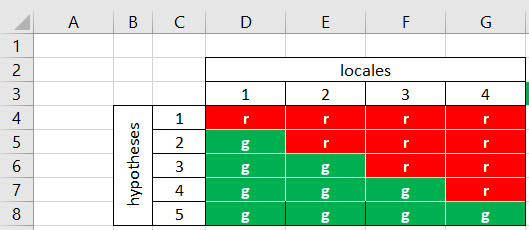
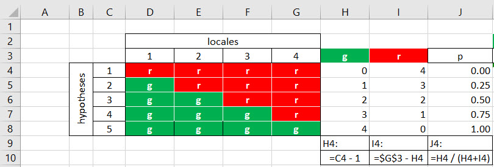
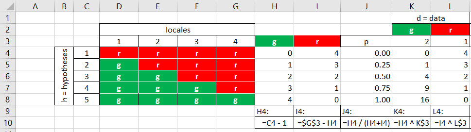
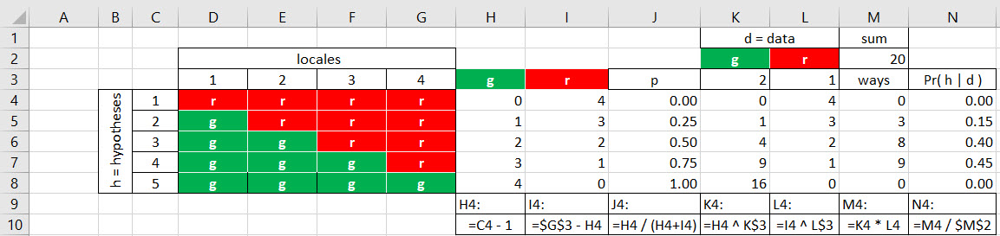
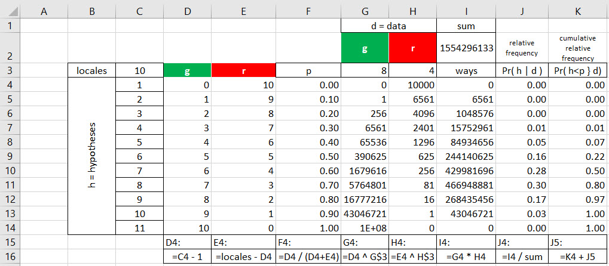
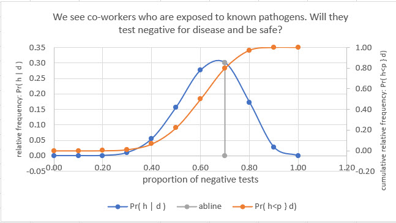
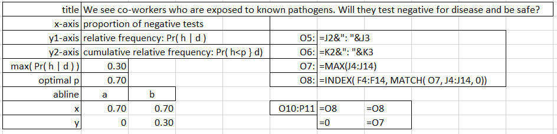

Chapter 3 Algorithmics 1: counting made easy
3.1 What’s an algorithm?
An algorithm is a set of rules used to perform ordered tasks to achieve a desired result. It is precise, effective in that it produces what it advertises it will do, and sometimes, also efficient in the number of steps to achieve a desired result. we often contrast the notion of an algorithm with a heuristic.
A heuristic structure attempts to anticipate that which is unknown. It might use algorithms, rules of thumb, received traditions, all to help get to a solution. In computing parlance and recent practice, this description of a heuristic structure deprecates to a convenient approximation to a solution, even if the result is not optimal.7
We will start by unpeeling the structure of a specific context: a decision making process for a disaster relief organization whose co-workers deliver services in locales known to have disease. We search for the most plausible answer to the question will our co-workers be safe if exposed to pathogens? In the next section We use this working example of our organization which provides disaster relief services on location.
3.2 Our first job: unobserved hypotheses
We currently deliver aid to victims in four locales. Severe weather compromises water supplies, sewage containment, communications, transportation, healthcare, food and energy. We have obligations to keep co-workers reasonably safe and healthy as they deliver their services. One protocol we follow is frequent testing for pathogens in the blood and respiratory systems of each co-worker. If co-workers test positive for known pathogens in a locale, affected co-workers will be removed to a safe site for appropriate care, and a further decision will be forthcoming for continued deployment to the locale.
We see co-workers who are exposed to known pathogens. Will they test negative for disease and be safe?8
In our heuristic process, before we begin to construct an algorithm, we begin thinking about the question first. Will they remain healthy? At this stage we consider only what is possible for testing in the four locales. We will consider only a strict positive or negative test forIn considering this question for co-workers across four locales the answer to the question provisionally is binary: yes co-workers in a locale test positive, or, no they do not. We will eventually color code a positive test with red and a negative test with green.
3.3 Possibilities abound
In this thought experiment we imagine that all four locales have co-workers that might test positive or they might test negative. We do not expect anything yet, just express hope that all are negative. These are two conjectures, considerations, theories even, we will call hypotheses. How many ways can four locales test positive and / or negative?
A discussion might reveal that is is possible that one locale tests positive while the other three are negative. Or again, that two test positive while the other two are negative. And, again, that three test positive, while only one tests negative. At the boundaries of our consideration we have the possibility that either none or all of the locales will test positive.
What have we arrived at? There are 5 hypotheses across 4 locales. We visualize the 5 hypotheses here in an Excel worksheet.

We index each hypothesis with integers from 1 to 5. We also notice that with 4 locales we have \(4+1=5\) hypotheses. We notice that hypothesis 1 conjectures 0 green tests; hypothesis 2 with 1 green test (3 red), and so on. We can now calculate the number of green and red tests for each conjecture. Start withe 0 green at hypothesis 1. Then the number of reds is \(locales - green = 4 - 0 = 0\). For hypothesis 2 the number of greens is simply increased by 1 so is the hypothesis 1 0 greens plus 1, which is just 1. The reds are still \(locales - green = 4 - 1 = 3\). Simple counting.
We could even simplify this further by also noticing the number of greens is just \(hypothesis - 1\). Thus for hypothesis 4 we have \(hypothesis - 1 = 4 - 1 = 3\) greens. We arrive at a simpler, easier to compute way to get at the number of greens and reds for each hypothesis built of the number of locales plus 1 to get the hypotheses. We then take the hypothesis and reduce by 1 to obtain the number of greens.
Now that we determined the number of greens and reds for each hypothesis, we can also calculate the proportion of greens, a statistic, a metric, that can also represent the particular hypothesis. That is what the next panel shows.
 Excel formula calculations appear below each row. We also notice that the green and red calculations run in opposite directions. We now hypothesize that proportions of observed data in the population of the 4 locales can range from 0.00 to 1.00 in steps of 0.25. This is a grid of hypotheses.
3.4 Observed data
We spent quite a bit of quality time with hypothesis formation. This is a subject we can and should consider very carefully. First, we framed a question informed by exposures to a pathogen and in the context of a policy. Second, we included all the possible hypotheses. Third, we quantified each and arrived at a measurable metric. We still do not which hypothesis, which proportion, represents the 4 locales. We turn to that task next.
We start with observed data. We label the hypotheses as unobserved data. Everything is fair game: it’s data. We take three samples from any locale. The samples don’t care what locale they come from. They are samples of tests pure and simple without locality attribution. This is our little world. We observe 2 green tests (negatives) and 1 red test (positive). If we let only the observed data talk, we say that 0.67 of the tests are negative, green. But is this representative of the 4 locales? Not at all necessarily. The observed data has no intrinsic relationship with the fact that there are locales.
Next we allow the data to interact with each hypothesis. This table details that conversation.
 We add two columns, K and L. we ask the question of how many ways can a green occur when we consider a hypothesis. Let’s look at the calculation for hypothesis 4. There are 3 green ways in that hypothesis that matter when we observe a green in the sample. But there are 2 greens in the sample. This is a both-and joint arrangement. Both we hypothesize 3 green ways and we observe 2 greens.
For each observation we have 3 green ways in hypothesis 4. For both observations there are \(3 \times 3 = 3^2 = 9\) ways. Both for one observation of a red and only 1 way left in hypothesis 4 reserved for a red there are \(1^1 = 1\) way for this observation to be consistent with this hypothesis.
3.5 Is anything really plausible?
Just asking this question seems to say yes. It is our final algorithmic task to deduce plausibility of the unobserved data of each hypothesis in the face of observed data. This panel reveals the finale.
 In this last scene, we calculate for each unobserved hypothesis the number of ways it is consistent with the observed data. We already calculated the number of consistent ways for the two greens and one red. Now we strap them together in another both-and logical calculation in column M. We simply multiply columns K and L together.
Again we lean on hypothesis 4 for help. There are 9 ways that 2 greens are consistent with a hypothesized proportion of 0.75 greens in a population of greens and reds. Both 9 green-consistent ways and 1 red-consistent way yield 9 jointly consistent ways that the sample and the hypothesis are logically compatible with one another.
We calculate the ways that each unobserved hypothesis are consistent with all of the data sampled. Now we calculate the contribution of the ways obvserved data are consistent with unobserved hypotheses. First we add up all of those ways. There are 20 total consistent ways. We calculate the fraction each hypothesis is consistent out of the total 20 ways.
3.6 Interpretation
Each of these fractions is between 0 and 1. The fractions add up to 1. They can now also be called probabilities. We have just deduced the probability of an unobserved hypothesis about the proportion of greens given a sample of observed data, \(Pr( h \mid d)\). For example \(Pr( h = 3 \,greens, \,\, 1\, red \mid d = 2 \,greens, \,\, 1 \,red ) = 0.75\), the highest rated hypothesis. We would therefore report that, given this data, hypothesis 4 is the most probably.
3.7 10 locales?
Suppose we needed to sample from 10 locales? Does that mean more hypotheses possible? Here’s the view from the grid.
 Eventually we run out of rows or columns or, good grief, patience. But the ideas around our algorithm, as inspired as they are by this grid, remain the same. We still have to only count the possible number of greens and reds for each possible, and exhaustive list of unobserved hyptheses. We still have to sample co-workers in locales, as many as we have time and money to do so. We still must determine deductively the hypothesis with the highest plausibility, credibility, consistency with the observed data.
Eventually we run out of rows or columns or, good grief, patience. But the ideas around our algorithm, as inspired as they are by this grid, remain the same. We still have to only count the possible number of greens and reds for each possible, and exhaustive list of unobserved hyptheses. We still have to sample co-workers in locales, as many as we have time and money to do so. We still must determine deductively the hypothesis with the highest plausibility, credibility, consistency with the observed data.
Now let us sample 12 locales. Here is the grid approximation to the probability of hypotheses given data.

We lost the green and red staircase. But look at those numbers of ways! The analysis boils down to a most likely hypothesis 8 (out of 11, one more than the number of locales) with a green proportion of 0.70 in the population of 10 locales.
The unwieldliness of these large ways numbers will soon outrun our computers’s ability to count. We will need to fix the algorithm very soon. We should notice the use of two named ranges: locales and sum. This begins to represent prevailing recommended practice for the construction of spreadsheet models.
Added here as well are two important notes about the probability results. The first is the interpretation of the \(Pr( h \mid d )\) as a relative frequency, that is, the count of ways in column I relative to the sum of ways across all unobserved hypotheses. The second is the addition of column J to store our calculation of the cumulative relative frequency. This calculates the relative frequency increment to the previous accumulation of the relative frequency. It is the area under the relative frequency curve. We interpret this area as the probability of all hypotheses \(h\) less than a possible proportion \(p\) occurring.
A plot will help with the tortured description of the concepts.

Here is the Excel setup for the plot.

Prevailing plotting practices recommend (strongly!) to store plot titles for the main chart and axes in editable cells. We can follow these directions to create dynamic chart titles including axis titles for primary and secondary y-axes.
The abline connects two points in x-y coordinates. The line visualizes the location of the maximum \(Pr(h \mid d)\) point on the relative frequency and cumulative relative frequency curves and the identification of the most plausible hypothesis 0.80 derived from 8 of the 10 locales. Cell O7 uses the excel =MAX() function to retrieve the maximum \(Pr(h \mid d)\) from vector J4:J14. In cell O8 the =MATCH() function locates the row number of the \(max \, Pr(h \mid d)\) in the vector J4:J14. The INDEX() retrieves the value of the cell in the \(p\) vector F4:F14 at the row located with the =MATCH() function.
With 10 locales we must expand the number of unobserved potential hypotheses that the population of locales might occur. With this expansion comes the finer delineation of hypothesized proportions of the population. While the proportions of the population are continuous real numbers, the discrete nature of the hypotheses in terms of 10 distinct locales maps directly to a discrete set of possible proportions.
3.8 Next
Algorithmics 2 will expand this model to its rightful place in applied probability (also known as statistics). This place is called the binomial distribution. The binomial distribution will serve as our observational model. We will reduce the simple counting model of this note to a much more robust distribution.
3.9 References and endnotes
We define a heuristic notion as the concept of an as-yet-unknown content or solution, something to be discovered (Gr. heurisko). A heuristic structure is then an “ordered set of heuristic notions,” according to Lonergan (1970, p.392), that is, a method, insofar as structure is some sort of order. As such it is the procedure or method, not the content of the procedure or method. A solution for a heuristic structure can derive from approximations according to a criterion. Algorithms provide a quantification of some heuristics. Algorithms then form a subset of heuristic structures as anticipations of as-yet-not-known solutions or content.↩
This is one of two possible question frames. We could ask the opposite question. Will they test positive, not be safe, and contract disease? When we form hypotheses there is indeed a framing bias we should be aware of. The frame might bias selections that favor what the question implicitly looks for, here a positive or a negative test. It is the positive or negative connotation that creates this cognitive bias.↩